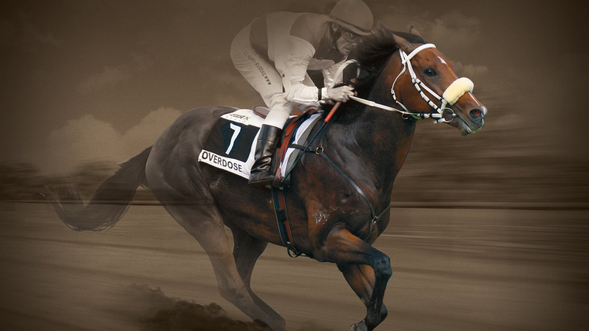
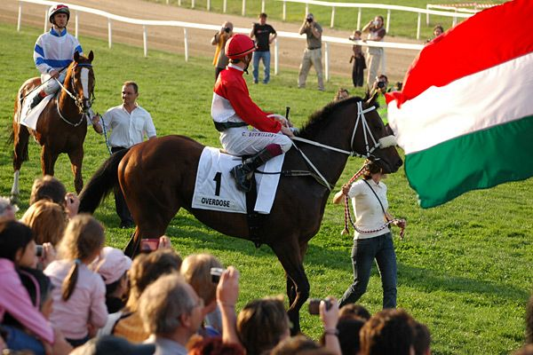

Kvíz Overdoseról

1. Mikor születt Overdose?
2. 2011. április 17-én Hoppegartenben mekkora pályacsúcsot állított 1000 méteren?

3. Mekkora értéke volt Overdosenak?
4. Egymást követő győzelmei alapján hányadik helyen áll a világranglistán?
5. Miben és mikor halt meg Overdose?